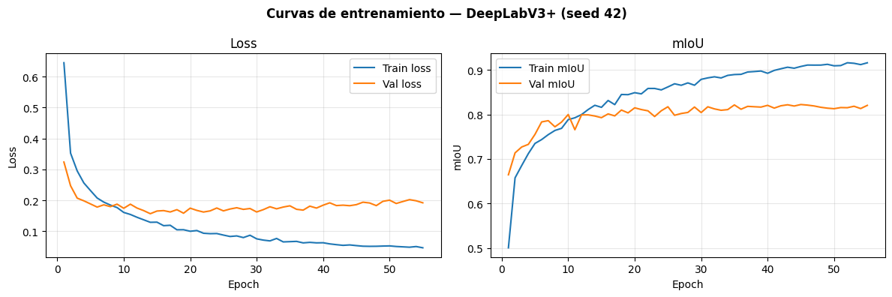
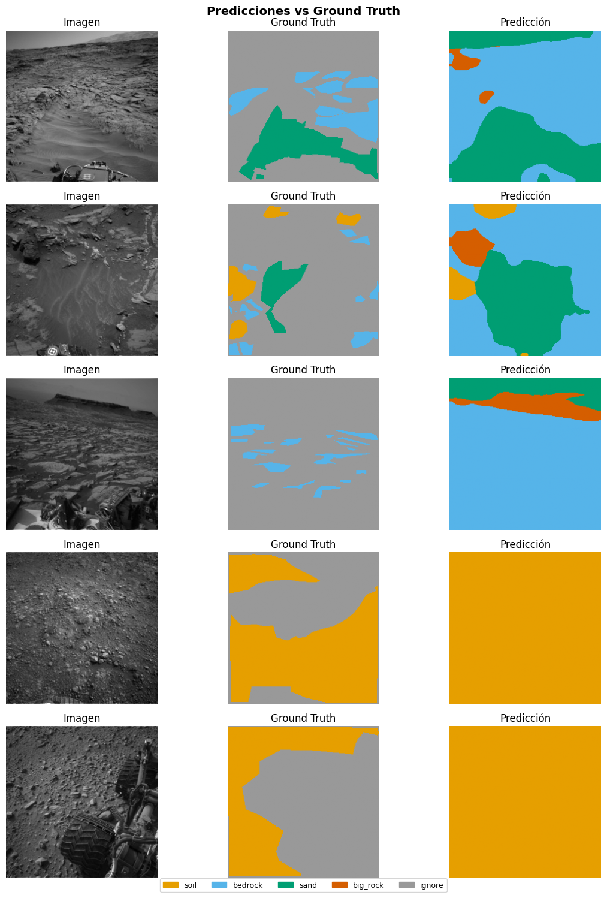

05a — DeepLabV3+ (ResNet-50)#
Paper: Mohammad et al. — Deep Learning based Semantic Segmentation for Mars Rover Terrain Classification
DOI: 10.1109/iSpaRo60631.2024.10687827 — iSpaRo 2024
Arquitectura: DeepLabV3+ con backbone ResNet-50 preentrenado en ImageNet, cabeza ASPP y cabeza auxiliar (weight=0.4).
Entrenamiento: Google Colab Pro (A100 / T4 recomendado).
Instrucciones de uso#
Prueba rapida en computador local (sin GPU potente)#
Antes de lanzar el entrenamiento completo en Colab, verifica que el pipeline funciona en tu maquina local con fast_subset=True:
# En la celda de configuracion, cambia:
FAST_SUBSET = True # activa el subset pequeno (~200 imgs train, ~50 val)
Esto corre ~2 min por seed en CPU/RTX 4050 y verifica que no hay errores en el pipeline completo (carga de datos -> forward -> loss -> metricas -> checkpoint). Solo guarda el modelo del primer seed para no llenar disco.
No uses los resultados de fast_subset=True para el benchmark — son solo para depuracion.
Entrenamiento completo en Google Colab Pro#
Subir el proyecto a Google Drive en
/content/drive/MyDrive/ai4mars_DL-v3/Asegurarse de que
processed/split_indices_msl6k.pkleste en el repo (no se regenera)Montar Drive y ejecutar todas las celdas en orden
Los checkpoints se guardan en Drive automaticamente
0. Setup — Detectar entorno (Local vs Colab)#
import os, sys
from pathlib import Path
IN_COLAB = 'google.colab' in sys.modules
if IN_COLAB:
from google.colab import drive
drive.mount('/content/drive')
!git clone https://github.com/UnDauphin/ai4mars_DL-v3 /content/ai4mars_DL-v3
!pip install torch==2.6.0 torchvision==0.21.0 --index-url https://download.pytorch.org/whl/cu124 -q
!pip install -r /content/ai4mars_DL-v3/requirements.txt -q
PROJECT_ROOT = Path('/content/ai4mars_DL-v3')
sys.path.append(str(PROJECT_ROOT / 'notebooks'))
import mars_utils
mars_utils.CHECKPOINTS_DIR = Path('/content/drive/MyDrive/ai4mars_DL-v3/checkpoints')
mars_utils.CHECKPOINTS_DIR.mkdir(parents=True, exist_ok=True)
print('Colab — Drive montado, repo clonado, dependencias instaladas')
else:
# Local: este notebook esta en notebooks/, ROOT es el padre
PROJECT_ROOT = Path('__file__').resolve().parent.parent
# Fallback si __file__ no funciona en Jupyter
if not (PROJECT_ROOT / 'processed').exists():
PROJECT_ROOT = Path.cwd().parent
print(f'Local — ROOT: {PROJECT_ROOT}')
print(f'ROOT existe: {PROJECT_ROOT.exists()}')
print(f'processed/ existe: {(PROJECT_ROOT / "processed").exists()}')
print(f'data/ existe: {(PROJECT_ROOT / "data").exists()}')
Local — ROOT: C:\Users\Hp\Documents\Deep_learning\ai4mars_DL-v3-main\ai4mars_DL-v3-main
ROOT existe: True
processed/ existe: True
data/ existe: True
import torch
import torch.nn as nn
import torch.nn.functional as F
from torchvision.models.segmentation import deeplabv3_resnet50, DeepLabV3_ResNet50_Weights
import numpy as np
import pandas as pd
import matplotlib.pyplot as plt
from tqdm.auto import tqdm
from mars_utils import (
set_seed, load_norm_stats, load_split,
build_dataloaders, MetricsAccumulator,
train_one_epoch, evaluate, train_model, run_multi_seed,
append_benchmark_results, plot_best_seed_curves,
print_summary_table, visualize_predictions, count_parameters,
NUM_CLASSES, IGNORE_INDEX, SEEDS,
CHECKPOINTS_DIR, BENCHMARK_CSV
)
DEVICE = torch.device('cuda' if torch.cuda.is_available() else 'cpu')
print(f'Device: {DEVICE}')
if DEVICE.type == 'cuda':
print(f'GPU: {torch.cuda.get_device_name(0)}')
print(f'VRAM: {torch.cuda.get_device_properties(0).total_memory / 1e9:.1f} GB')
Device: cuda
GPU: NVIDIA GeForce RTX 4050 Laptop GPU
VRAM: 6.4 GB
1. Configuracion#
# ======================================================
# CONFIGURACION — ajustar segun entorno
# ======================================================
MODEL_NAME = 'DeepLabV3+'
FAST_SUBSET = False # True para prueba rapida local; False para produccion en Colab
# Hiperparametros (segun KB seccion 9.1)
LR = 0.001
MOMENTUM = 0.9
WEIGHT_DECAY = 1e-4
AUX_WEIGHT = 0.4
MAX_EPOCHS = 80
PATIENCE = 10 # KB v6: patience subido de 7 a 10
BATCH_SIZE = 16
# Pesos de clase: soil=1.0, bedrock=0.8, sand=2.0, big_rock=8.0
CLASS_WEIGHTS = torch.tensor([1.0, 0.8, 2.0, 8.0], dtype=torch.float32).to(DEVICE)
print(f'Modo: {"FAST SUBSET (prueba)" if FAST_SUBSET else "PRODUCCION COMPLETA"}')
print(f'Epochs max: {MAX_EPOCHS} | Early stopping patience: {PATIENCE}')
print(f'Seeds: {SEEDS}')
Modo: PRODUCCION COMPLETA
Epochs max: 80 | Early stopping patience: 10
Seeds: [42, 123, 7]
2. Datos#
df_train, df_val, df_gold = load_split()
mean, std = load_norm_stats()
print(f'Train: {len(df_train)} | Val: {len(df_val)} | Gold test: {len(df_gold)}')
print(f'Normalizacion — mean: {mean} | std: {std}')
✅ Split cargado — train: 4200 | val: 1800 | gold test: 322
Train: 4200 | Val: 1800 | Gold test: 322
Normalizacion — mean: [0.2303263779898021, 0.2303263779898021, 0.2303263779898021] | std: [0.10591342097577364, 0.10591342097577364, 0.10591342097577364]
# Verificacion anti data leakage
# Bug 6: derivar stem de image_path — df_train['stem'] no existe
train_ids = set(Path(p).stem for p in df_train['image_path'])
gold_ids = set(Path(p).stem for p in df_gold['image_path'])
assert len(train_ids & gold_ids) == 0, 'DATA LEAKAGE: overlap entre train y gold test'
print(f'Sin overlap entre train y gold test')
print(f'Train: {len(df_train)} | Val: {len(df_val)} | Gold: {len(df_gold)}')
Sin overlap entre train y gold test
Train: 4200 | Val: 1800 | Gold: 322
3. Arquitectura — DeepLabV3+ con ResNet-50#
class DeepLabV3PlusMars(nn.Module):
"""
DeepLabV3+ con backbone ResNet-50 preentrenado en ImageNet.
- Salida principal: cabeza ASPP -> 4 clases
- Salida auxiliar: cabeza aux sobre layer3 -> 4 clases (weight=0.4 en loss)
- Entrada esperada: [B, 3, 256, 256]
- Salida en inferencia: [B, 4, 256, 256]
Referencia: Mohammad et al., iSpaRo 2024.
"""
def __init__(self, num_classes: int = 4, aux_loss: bool = True):
super().__init__()
self.aux_loss = aux_loss
# Carga DeepLabV3 con ResNet-50 preentrenado y ajusta la cabeza final
weights = DeepLabV3_ResNet50_Weights.DEFAULT
base = deeplabv3_resnet50(weights=weights, aux_loss=aux_loss)
# Reemplazar cabeza principal (256 canales ASPP -> num_classes)
base.classifier[-1] = nn.Conv2d(256, num_classes, kernel_size=1)
# Reemplazar cabeza auxiliar (256 -> num_classes)
if aux_loss and base.aux_classifier is not None:
base.aux_classifier[-1] = nn.Conv2d(256, num_classes, kernel_size=1)
self.model = base
def forward(self, x):
h, w = x.shape[-2:]
out = self.model(x)
# Upsample a resolucion original si es necesario
logits = F.interpolate(out['out'], size=(h, w),
mode='bilinear', align_corners=False)
if self.training and self.aux_loss and 'aux' in out:
aux_logits = F.interpolate(out['aux'], size=(h, w),
mode='bilinear', align_corners=False)
return {'out': logits,'aux': aux_logits}
return {'out': logits}
def build_model():
return DeepLabV3PlusMars(num_classes=NUM_CLASSES, aux_loss=True).to(DEVICE)
# Verificacion rapida de shapes
_m = build_model()
_m.eval()
with torch.no_grad():
_x = torch.randn(2, 3, 256, 256).to(DEVICE)
_out = _m(_x)
print(f'Forward OK — salida eval: {_out["out"].shape}') # (2, 4, 256, 256)
_m.train()
with torch.no_grad():
_out_train = _m(_x)
print(f'Forward OK — salida train: logits={_out_train["out"].shape}, aux={_out_train["aux"].shape}')
n_params = count_parameters(_m)
print(f'Parametros entrenables: {n_params:.2f}M (referencia KB: ~42.00M)')
del _m, _x, _out, _out_train
Forward OK — salida eval: torch.Size([2, 4, 256, 256])
Forward OK — salida train: logits=torch.Size([2, 4, 256, 256]), aux=torch.Size([2, 4, 256, 256])
Parametros entrenables: 42.00M (referencia KB: ~42.00M)
4. Loss, Optimizer y Scheduler#
class DeepLabLoss(nn.Module):
"""
CrossEntropyLoss con class weights e ignore_index.
En entrenamiento combina salida principal + cabeza auxiliar (weight=0.4).
En evaluacion solo usa la salida principal.
"""
def __init__(self, weight: torch.Tensor, aux_weight: float = 0.4,
ignore_index: int = 255):
super().__init__()
self.ce = nn.CrossEntropyLoss(weight=weight, ignore_index=ignore_index)
self.aux_weight = aux_weight
def forward(self, output, target):
if isinstance(output, dict):
logits = output['out']
loss_main = self.ce(logits, target)
if 'aux' in output:
loss_aux = self.ce(output['aux'], target)
return loss_main + self.aux_weight * loss_aux
return loss_main
return self.ce(output, target)
def criterion_fn():
return DeepLabLoss(
weight=CLASS_WEIGHTS,
aux_weight=AUX_WEIGHT,
ignore_index=IGNORE_INDEX
)
def optimizer_fn(params):
return torch.optim.SGD(
params, lr=LR, momentum=MOMENTUM, weight_decay=WEIGHT_DECAY
)
def scheduler_fn(optimizer):
# PolynomialLR: lr decae con potencia 0.9 a lo largo de MAX_EPOCHS iteraciones
return torch.optim.lr_scheduler.PolynomialLR(
optimizer, total_iters=MAX_EPOCHS, power=0.9
)
print('Loss, optimizer y scheduler definidos')
print(f' Loss: CrossEntropyLoss (weights=[1.0, 0.8, 2.0, 8.0], aux_weight={AUX_WEIGHT})')
print(f' Optimizer: SGD (lr={LR}, momentum={MOMENTUM}, wd={WEIGHT_DECAY})')
print(f' Scheduler: PolynomialLR (power=0.9, {MAX_EPOCHS} iters)')
Loss, optimizer y scheduler definidos
Loss: CrossEntropyLoss (weights=[1.0, 0.8, 2.0, 8.0], aux_weight=0.4)
Optimizer: SGD (lr=0.001, momentum=0.9, wd=0.0001)
Scheduler: PolynomialLR (power=0.9, 80 iters)
5. Entrenamiento Multi-Seed#
Nota Colab: Los checkpoints se guardan en ROOT/checkpoints/ que apunta a Google Drive.
Nota local con FAST_SUBSET=True: ~200 imgs train, ~50 val, ~2 min/seed — solo para verificar el pipeline.
print(f"df_train shape: {df_train.shape}")
print(f"df_val shape: {df_val.shape}")
print(f"df_gold shape: {df_gold.shape}")
print()
print("Primeras rutas de df_train:")
print(df_train['image_path'].head(3).tolist())
print()
# Verificar que los archivos realmente existen
from pathlib import Path
sample = df_train['image_path'].iloc[0] if len(df_train) > 0 else "VACÍO"
print(f"Primer archivo existe: {Path(sample).exists() if sample != 'VACÍO' else 'df_train está vacío'}")
df_train shape: (4200, 6)
df_val shape: (1800, 6)
df_gold shape: (322, 6)
Primeras rutas de df_train:
['C:\\Users\\Hp\\Documents\\Deep_learning\\ai4mars_DL-v3-main\\ai4mars_DL-v3-main\\data\\images_256\\NLA_397681801EDR_F0020000AUT_04096M1.jpg', 'C:\\Users\\Hp\\Documents\\Deep_learning\\ai4mars_DL-v3-main\\ai4mars_DL-v3-main\\data\\images_256\\NLA_397681867EDR_F0020000AUT_04096M1.jpg', 'C:\\Users\\Hp\\Documents\\Deep_learning\\ai4mars_DL-v3-main\\ai4mars_DL-v3-main\\data\\images_256\\NLA_397681893EDR_F0020000AUT_04096M1.jpg']
Primer archivo existe: True
import pickle
from pathlib import Path
# Ver qué hay dentro del pickle
PROCESSED_DIR = Path(PROJECT_ROOT) / 'processed'
with open(PROCESSED_DIR / 'split_indices_msl6k.pkl', 'rb') as f:
split = pickle.load(f)
print("Claves del pickle:", list(split.keys()))
print("Tipo de train_ids:", type(list(split.values())[0]))
print("Primeros 3 elementos de train_ids:", list(split.values())[0][:3])
print("Total train_ids:", len(list(split.values())[0]))
Claves del pickle: ['train_ids', 'val_ids', 'seed', 'n_subset', 'val_ratio', 'stratify_col']
Tipo de train_ids: <class 'list'>
Primeros 3 elementos de train_ids: ['NLB_550542471EDR_F0633326NCAM00353M1', 'NLB_450326513EDR_F0310538NCAM00350M1', 'NLB_574253980EDR_F0681816NCAM00259M1']
Total train_ids: 4200
# Ver qué tiene el manifest y cómo se ven sus stems
import pandas as pd
manifest = pd.read_csv(PROCESSED_DIR / 'manifest_msl_train.csv')
print("Columnas del manifest:", manifest.columns.tolist())
print("Primera ruta de imagen:", manifest['image_path'].iloc[0])
print("Stem de esa ruta:", Path(manifest['image_path'].iloc[0]).stem)
print("Primer train_id del pickle:", list(split.values())[0][0])
Columnas del manifest: ['mission', 'camera', 'id', 'image_path', 'mask_path', 'split']
Primera ruta de imagen: msl\ncam\images\edr\NLA_397681339EDR_F0020000AUT_04096M1.JPG
Stem de esa ruta: NLA_397681339EDR_F0020000AUT_04096M1
Primer train_id del pickle: NLB_550542471EDR_F0633326NCAM00353M1
# Bug 7: run_multi_seed NO acepta mean, std ni max_epochs.
# El parametro correcto es num_epochs. mean/std los carga internamente.
summary = run_multi_seed(
model_fn = build_model,
df_train = df_train,
df_val = df_val,
df_gold = df_gold,
criterion_fn = criterion_fn,
optimizer_fn = optimizer_fn,
scheduler_fn = scheduler_fn,
model_name = MODEL_NAME,
device = DEVICE,
num_epochs = MAX_EPOCHS, # 'num_epochs', no 'max_epochs'
patience = PATIENCE,
batch_size = BATCH_SIZE,
fast_subset = FAST_SUBSET,
n_train_fast = 200,
n_val_fast = 50,
)
───────────────────────────────────────────────────────
Seed 42 | DeepLabV3+
Entrenamiento desde cero
============================================================
DeepLabV3+_seed42 | device=cuda | AMP=True
epochs=80 | patience=10 | aux_weight=0.0
============================================================
Ep 1/80 | loss=0.6444 mIoU=0.5002 | val_loss=0.3235 val_mIoU=0.6645 | rock=0.1235
Ep 2/80 | loss=0.3523 mIoU=0.6576 | val_loss=0.2469 val_mIoU=0.7138 | rock=0.2469
Ep 3/80 | loss=0.2949 mIoU=0.6853 | val_loss=0.2069 val_mIoU=0.7270 | rock=0.2577
Checkpoint periódico guardado (epoch 3)
Ep 4/80 | loss=0.2560 mIoU=0.7121 | val_loss=0.1983 val_mIoU=0.7329 | rock=0.2798
Ep 5/80 | loss=0.2313 mIoU=0.7350 | val_loss=0.1882 val_mIoU=0.7554 | rock=0.3469
Ep 6/80 | loss=0.2073 mIoU=0.7437 | val_loss=0.1780 val_mIoU=0.7834 | rock=0.4179
Checkpoint periódico guardado (epoch 6)
Ep 7/80 | loss=0.1941 mIoU=0.7548 | val_loss=0.1853 val_mIoU=0.7862 | rock=0.4564
Ep 8/80 | loss=0.1844 mIoU=0.7642 | val_loss=0.1794 val_mIoU=0.7724 | rock=0.4021
Ep 9/80 | loss=0.1764 mIoU=0.7690 | val_loss=0.1875 val_mIoU=0.7831 | rock=0.4283
Checkpoint periódico guardado (epoch 9)
Ep 10/80 | loss=0.1608 mIoU=0.7885 | val_loss=0.1742 val_mIoU=0.8000 | rock=0.4747
Ep 11/80 | loss=0.1541 mIoU=0.7927 | val_loss=0.1874 val_mIoU=0.7658 | rock=0.4010
Ep 12/80 | loss=0.1450 mIoU=0.7999 | val_loss=0.1748 val_mIoU=0.7992 | rock=0.4799
Checkpoint periódico guardado (epoch 12)
Ep 13/80 | loss=0.1369 mIoU=0.8112 | val_loss=0.1666 val_mIoU=0.7992 | rock=0.4825
Ep 14/80 | loss=0.1288 mIoU=0.8208 | val_loss=0.1566 val_mIoU=0.7966 | rock=0.4523
Ep 15/80 | loss=0.1293 mIoU=0.8162 | val_loss=0.1652 val_mIoU=0.7930 | rock=0.4658
Checkpoint periódico guardado (epoch 15)
Ep 16/80 | loss=0.1179 mIoU=0.8316 | val_loss=0.1666 val_mIoU=0.8014 | rock=0.4713
Ep 17/80 | loss=0.1192 mIoU=0.8223 | val_loss=0.1622 val_mIoU=0.7969 | rock=0.4499
Ep 18/80 | loss=0.1047 mIoU=0.8451 | val_loss=0.1696 val_mIoU=0.8101 | rock=0.4964
Checkpoint periódico guardado (epoch 18)
Ep 19/80 | loss=0.1049 mIoU=0.8447 | val_loss=0.1582 val_mIoU=0.8037 | rock=0.4821
Ep 20/80 | loss=0.0999 mIoU=0.8491 | val_loss=0.1745 val_mIoU=0.8151 | rock=0.5276
Ep 21/80 | loss=0.1022 mIoU=0.8465 | val_loss=0.1673 val_mIoU=0.8112 | rock=0.5160
Checkpoint periódico guardado (epoch 21)
Ep 22/80 | loss=0.0935 mIoU=0.8587 | val_loss=0.1620 val_mIoU=0.8083 | rock=0.4988
Ep 23/80 | loss=0.0921 mIoU=0.8586 | val_loss=0.1657 val_mIoU=0.7955 | rock=0.4528
Ep 24/80 | loss=0.0925 mIoU=0.8554 | val_loss=0.1750 val_mIoU=0.8084 | rock=0.4947
Checkpoint periódico guardado (epoch 24)
Ep 25/80 | loss=0.0875 mIoU=0.8621 | val_loss=0.1658 val_mIoU=0.8175 | rock=0.5192
Ep 26/80 | loss=0.0830 mIoU=0.8692 | val_loss=0.1718 val_mIoU=0.7983 | rock=0.4724
Ep 27/80 | loss=0.0848 mIoU=0.8658 | val_loss=0.1759 val_mIoU=0.8023 | rock=0.4822
Checkpoint periódico guardado (epoch 27)
Ep 28/80 | loss=0.0795 mIoU=0.8711 | val_loss=0.1707 val_mIoU=0.8047 | rock=0.4737
Ep 29/80 | loss=0.0870 mIoU=0.8659 | val_loss=0.1734 val_mIoU=0.8169 | rock=0.5309
Ep 30/80 | loss=0.0754 mIoU=0.8791 | val_loss=0.1622 val_mIoU=0.8045 | rock=0.4720
Checkpoint periódico guardado (epoch 30)
Ep 31/80 | loss=0.0713 mIoU=0.8824 | val_loss=0.1698 val_mIoU=0.8174 | rock=0.5245
Ep 32/80 | loss=0.0688 mIoU=0.8849 | val_loss=0.1791 val_mIoU=0.8127 | rock=0.5070
Ep 33/80 | loss=0.0766 mIoU=0.8823 | val_loss=0.1724 val_mIoU=0.8096 | rock=0.5111
Checkpoint periódico guardado (epoch 33)
Ep 34/80 | loss=0.0655 mIoU=0.8881 | val_loss=0.1781 val_mIoU=0.8111 | rock=0.5013
Ep 35/80 | loss=0.0663 mIoU=0.8899 | val_loss=0.1821 val_mIoU=0.8216 | rock=0.5389
Ep 36/80 | loss=0.0672 mIoU=0.8904 | val_loss=0.1708 val_mIoU=0.8119 | rock=0.5126
Checkpoint periódico guardado (epoch 36)
Ep 37/80 | loss=0.0623 mIoU=0.8956 | val_loss=0.1682 val_mIoU=0.8184 | rock=0.5239
Ep 38/80 | loss=0.0640 mIoU=0.8967 | val_loss=0.1811 val_mIoU=0.8175 | rock=0.5255
Ep 39/80 | loss=0.0624 mIoU=0.8979 | val_loss=0.1748 val_mIoU=0.8167 | rock=0.5238
Checkpoint periódico guardado (epoch 39)
Ep 40/80 | loss=0.0628 mIoU=0.8928 | val_loss=0.1841 val_mIoU=0.8207 | rock=0.5319
Ep 41/80 | loss=0.0590 mIoU=0.8993 | val_loss=0.1918 val_mIoU=0.8144 | rock=0.5274
Ep 42/80 | loss=0.0566 mIoU=0.9029 | val_loss=0.1829 val_mIoU=0.8197 | rock=0.5418
Checkpoint periódico guardado (epoch 42)
Ep 43/80 | loss=0.0543 mIoU=0.9064 | val_loss=0.1842 val_mIoU=0.8219 | rock=0.5386
Ep 44/80 | loss=0.0557 mIoU=0.9042 | val_loss=0.1825 val_mIoU=0.8191 | rock=0.5408
Ep 45/80 | loss=0.0535 mIoU=0.9081 | val_loss=0.1859 val_mIoU=0.8225 | rock=0.5428
Checkpoint periódico guardado (epoch 45)
Ep 46/80 | loss=0.0516 mIoU=0.9113 | val_loss=0.1938 val_mIoU=0.8212 | rock=0.5547
Ep 47/80 | loss=0.0512 mIoU=0.9111 | val_loss=0.1913 val_mIoU=0.8193 | rock=0.5342
Ep 48/80 | loss=0.0513 mIoU=0.9112 | val_loss=0.1828 val_mIoU=0.8163 | rock=0.5254
Checkpoint periódico guardado (epoch 48)
Ep 49/80 | loss=0.0520 mIoU=0.9129 | val_loss=0.1966 val_mIoU=0.8143 | rock=0.5296
Ep 50/80 | loss=0.0526 mIoU=0.9096 | val_loss=0.2004 val_mIoU=0.8131 | rock=0.5211
Ep 51/80 | loss=0.0507 mIoU=0.9101 | val_loss=0.1896 val_mIoU=0.8157 | rock=0.5220
Checkpoint periódico guardado (epoch 51)
Ep 52/80 | loss=0.0495 mIoU=0.9165 | val_loss=0.1960 val_mIoU=0.8153 | rock=0.5274
Ep 53/80 | loss=0.0483 mIoU=0.9152 | val_loss=0.2021 val_mIoU=0.8186 | rock=0.5341
Ep 54/80 | loss=0.0505 mIoU=0.9123 | val_loss=0.1983 val_mIoU=0.8134 | rock=0.5169
Checkpoint periódico guardado (epoch 54)
Ep 55/80 | loss=0.0465 mIoU=0.9164 | val_loss=0.1918 val_mIoU=0.8206 | rock=0.5300
Early stopping en epoch 55 (sin mejora por 10 epochs)
Mejor val mIoU=0.8225 (epoch 45) | tiempo=11910s
Checkpoint periódico eliminado
Gold test mIoU=0.8425
Progreso guardado (1/3 seeds)
───────────────────────────────────────────────────────
Seed 123 | DeepLabV3+
Entrenamiento desde cero
============================================================
DeepLabV3+_seed123 | device=cuda | AMP=True
epochs=80 | patience=10 | aux_weight=0.0
============================================================
Ep 1/80 | loss=0.6386 mIoU=0.5036 | val_loss=0.3409 val_mIoU=0.6748 | rock=0.1564
Ep 2/80 | loss=0.3641 mIoU=0.6509 | val_loss=0.2655 val_mIoU=0.6721 | rock=0.1197
Ep 3/80 | loss=0.2989 mIoU=0.6840 | val_loss=0.2118 val_mIoU=0.7415 | rock=0.3163
Checkpoint periódico guardado (epoch 3)
Ep 4/80 | loss=0.2430 mIoU=0.7151 | val_loss=0.2182 val_mIoU=0.7403 | rock=0.3346
Ep 5/80 | loss=0.2216 mIoU=0.7364 | val_loss=0.2507 val_mIoU=0.6945 | rock=0.2590
Ep 6/80 | loss=0.2102 mIoU=0.7475 | val_loss=0.1997 val_mIoU=0.7494 | rock=0.3597
Checkpoint periódico guardado (epoch 6)
Ep 7/80 | loss=0.1944 mIoU=0.7566 | val_loss=0.1766 val_mIoU=0.7748 | rock=0.3876
Ep 8/80 | loss=0.1832 mIoU=0.7676 | val_loss=0.2121 val_mIoU=0.7753 | rock=0.4385
Ep 9/80 | loss=0.1745 mIoU=0.7753 | val_loss=0.1848 val_mIoU=0.7766 | rock=0.4421
Checkpoint periódico guardado (epoch 9)
Ep 10/80 | loss=0.1646 mIoU=0.7876 | val_loss=0.1543 val_mIoU=0.7852 | rock=0.4129
Ep 11/80 | loss=0.1490 mIoU=0.7937 | val_loss=0.1758 val_mIoU=0.7612 | rock=0.3679
Ep 12/80 | loss=0.1446 mIoU=0.7990 | val_loss=0.1731 val_mIoU=0.7867 | rock=0.4501
Checkpoint periódico guardado (epoch 12)
Ep 13/80 | loss=0.1342 mIoU=0.8120 | val_loss=0.1674 val_mIoU=0.8008 | rock=0.4744
Ep 14/80 | loss=0.1284 mIoU=0.8135 | val_loss=0.1657 val_mIoU=0.7881 | rock=0.4411
Ep 15/80 | loss=0.1218 mIoU=0.8192 | val_loss=0.1653 val_mIoU=0.8084 | rock=0.4992
Checkpoint periódico guardado (epoch 15)
Ep 16/80 | loss=0.1167 mIoU=0.8267 | val_loss=0.1731 val_mIoU=0.8021 | rock=0.5043
Ep 17/80 | loss=0.1138 mIoU=0.8298 | val_loss=0.1747 val_mIoU=0.7914 | rock=0.4449
Ep 18/80 | loss=0.1079 mIoU=0.8388 | val_loss=0.1667 val_mIoU=0.8145 | rock=0.5183
Checkpoint periódico guardado (epoch 18)
Ep 19/80 | loss=0.1062 mIoU=0.8412 | val_loss=0.1607 val_mIoU=0.8024 | rock=0.4809
Ep 20/80 | loss=0.1064 mIoU=0.8466 | val_loss=0.1958 val_mIoU=0.7918 | rock=0.4679
Ep 21/80 | loss=0.0984 mIoU=0.8456 | val_loss=0.1659 val_mIoU=0.7975 | rock=0.4718
Checkpoint periódico guardado (epoch 21)
Ep 22/80 | loss=0.0921 mIoU=0.8531 | val_loss=0.1669 val_mIoU=0.8138 | rock=0.5186
Ep 23/80 | loss=0.0888 mIoU=0.8633 | val_loss=0.1703 val_mIoU=0.8159 | rock=0.5174
Ep 24/80 | loss=0.0855 mIoU=0.8642 | val_loss=0.1808 val_mIoU=0.8149 | rock=0.5143
Checkpoint periódico guardado (epoch 24)
Ep 25/80 | loss=0.0915 mIoU=0.8632 | val_loss=0.1702 val_mIoU=0.8051 | rock=0.4747
Ep 26/80 | loss=0.0901 mIoU=0.8596 | val_loss=0.1678 val_mIoU=0.7781 | rock=0.3893
Ep 27/80 | loss=0.0864 mIoU=0.8607 | val_loss=0.1827 val_mIoU=0.8174 | rock=0.5229
Checkpoint periódico guardado (epoch 27)
Ep 28/80 | loss=0.0854 mIoU=0.8681 | val_loss=0.1686 val_mIoU=0.8134 | rock=0.5210
Ep 29/80 | loss=0.0771 mIoU=0.8767 | val_loss=0.1601 val_mIoU=0.8115 | rock=0.4961
Ep 30/80 | loss=0.0798 mIoU=0.8758 | val_loss=0.1664 val_mIoU=0.8136 | rock=0.5080
Checkpoint periódico guardado (epoch 30)
Ep 31/80 | loss=0.0738 mIoU=0.8772 | val_loss=0.1641 val_mIoU=0.8122 | rock=0.5101
Ep 32/80 | loss=0.0741 mIoU=0.8786 | val_loss=0.1729 val_mIoU=0.8113 | rock=0.5131
Ep 33/80 | loss=0.0721 mIoU=0.8813 | val_loss=0.1672 val_mIoU=0.8132 | rock=0.5071
Checkpoint periódico guardado (epoch 33)
Ep 34/80 | loss=0.0714 mIoU=0.8848 | val_loss=0.1658 val_mIoU=0.8088 | rock=0.4913
Ep 35/80 | loss=0.0674 mIoU=0.8850 | val_loss=0.1707 val_mIoU=0.8250 | rock=0.5349
Ep 36/80 | loss=0.0682 mIoU=0.8866 | val_loss=0.1752 val_mIoU=0.8169 | rock=0.5255
Checkpoint periódico guardado (epoch 36)
Ep 37/80 | loss=0.0644 mIoU=0.8890 | val_loss=0.1766 val_mIoU=0.8168 | rock=0.5212
Ep 38/80 | loss=0.0621 mIoU=0.8930 | val_loss=0.1739 val_mIoU=0.8219 | rock=0.5311
Ep 39/80 | loss=0.0674 mIoU=0.8918 | val_loss=0.1737 val_mIoU=0.8166 | rock=0.5204
Checkpoint periódico guardado (epoch 39)
Ep 40/80 | loss=0.0598 mIoU=0.8990 | val_loss=0.1757 val_mIoU=0.8149 | rock=0.5180
Ep 41/80 | loss=0.0620 mIoU=0.8933 | val_loss=0.1808 val_mIoU=0.8171 | rock=0.5076
Ep 42/80 | loss=0.0561 mIoU=0.9008 | val_loss=0.1777 val_mIoU=0.8136 | rock=0.5097
Checkpoint periódico guardado (epoch 42)
Ep 43/80 | loss=0.0614 mIoU=0.8937 | val_loss=0.1833 val_mIoU=0.8198 | rock=0.5212
Ep 44/80 | loss=0.0556 mIoU=0.9040 | val_loss=0.1935 val_mIoU=0.8163 | rock=0.5221
Ep 45/80 | loss=0.0594 mIoU=0.8999 | val_loss=0.1888 val_mIoU=0.8072 | rock=0.5164
Early stopping en epoch 45 (sin mejora por 10 epochs)
Mejor val mIoU=0.8250 (epoch 35) | tiempo=9738s
Checkpoint periódico eliminado
Gold test mIoU=0.7941
Progreso guardado (2/3 seeds)
───────────────────────────────────────────────────────
Seed 7 | DeepLabV3+
Entrenamiento desde cero
============================================================
DeepLabV3+_seed7 | device=cuda | AMP=True
epochs=80 | patience=10 | aux_weight=0.0
============================================================
Ep 1/80 | loss=0.6768 mIoU=0.4845 | val_loss=0.3278 val_mIoU=0.6770 | rock=0.1785
Ep 2/80 | loss=0.3594 mIoU=0.6479 | val_loss=0.2478 val_mIoU=0.7025 | rock=0.2286
Ep 3/80 | loss=0.2956 mIoU=0.6844 | val_loss=0.2130 val_mIoU=0.7281 | rock=0.2923
Checkpoint periódico guardado (epoch 3)
Ep 4/80 | loss=0.2528 mIoU=0.7105 | val_loss=0.1904 val_mIoU=0.7503 | rock=0.3346
Ep 5/80 | loss=0.2265 mIoU=0.7321 | val_loss=0.2005 val_mIoU=0.7578 | rock=0.3767
Ep 6/80 | loss=0.2113 mIoU=0.7400 | val_loss=0.2010 val_mIoU=0.7748 | rock=0.4209
Checkpoint periódico guardado (epoch 6)
Ep 7/80 | loss=0.1959 mIoU=0.7568 | val_loss=0.1948 val_mIoU=0.7670 | rock=0.4056
Ep 8/80 | loss=0.1809 mIoU=0.7684 | val_loss=0.1838 val_mIoU=0.7853 | rock=0.4560
Ep 9/80 | loss=0.1782 mIoU=0.7711 | val_loss=0.1730 val_mIoU=0.7561 | rock=0.3578
Checkpoint periódico guardado (epoch 9)
Ep 10/80 | loss=0.1625 mIoU=0.7829 | val_loss=0.1953 val_mIoU=0.7628 | rock=0.4071
Ep 11/80 | loss=0.1577 mIoU=0.7897 | val_loss=0.1653 val_mIoU=0.7797 | rock=0.4155
Ep 12/80 | loss=0.1452 mIoU=0.8074 | val_loss=0.1618 val_mIoU=0.8036 | rock=0.4884
Checkpoint periódico guardado (epoch 12)
Ep 13/80 | loss=0.1426 mIoU=0.8032 | val_loss=0.1612 val_mIoU=0.7840 | rock=0.4333
Ep 14/80 | loss=0.1334 mIoU=0.8177 | val_loss=0.1705 val_mIoU=0.7324 | rock=0.2456
Ep 15/80 | loss=0.1259 mIoU=0.8124 | val_loss=0.1995 val_mIoU=0.7897 | rock=0.4877
Checkpoint periódico guardado (epoch 15)
Ep 16/80 | loss=0.1191 mIoU=0.8274 | val_loss=0.1667 val_mIoU=0.8136 | rock=0.5355
Ep 17/80 | loss=0.1256 mIoU=0.8250 | val_loss=0.1629 val_mIoU=0.8121 | rock=0.5182
Ep 18/80 | loss=0.1121 mIoU=0.8407 | val_loss=0.1629 val_mIoU=0.8163 | rock=0.5269
Checkpoint periódico guardado (epoch 18)
Ep 19/80 | loss=0.1099 mIoU=0.8407 | val_loss=0.1689 val_mIoU=0.8094 | rock=0.5028
Ep 20/80 | loss=0.1098 mIoU=0.8430 | val_loss=0.1693 val_mIoU=0.7970 | rock=0.4623
Ep 21/80 | loss=0.1051 mIoU=0.8443 | val_loss=0.1749 val_mIoU=0.8100 | rock=0.5173
Checkpoint periódico guardado (epoch 21)
Ep 22/80 | loss=0.0947 mIoU=0.8529 | val_loss=0.1626 val_mIoU=0.8020 | rock=0.4643
Ep 23/80 | loss=0.0977 mIoU=0.8531 | val_loss=0.1864 val_mIoU=0.7747 | rock=0.4096
Ep 24/80 | loss=0.0975 mIoU=0.8575 | val_loss=0.1798 val_mIoU=0.7995 | rock=0.4794
Checkpoint periódico guardado (epoch 24)
Ep 25/80 | loss=0.0874 mIoU=0.8665 | val_loss=0.1733 val_mIoU=0.8054 | rock=0.4890
Ep 26/80 | loss=0.0881 mIoU=0.8645 | val_loss=0.1692 val_mIoU=0.8098 | rock=0.4984
Ep 27/80 | loss=0.0825 mIoU=0.8694 | val_loss=0.1704 val_mIoU=0.8048 | rock=0.4791
Checkpoint periódico guardado (epoch 27)
Ep 28/80 | loss=0.0804 mIoU=0.8711 | val_loss=0.1795 val_mIoU=0.8097 | rock=0.5008
Early stopping en epoch 28 (sin mejora por 10 epochs)
Mejor val mIoU=0.8163 (epoch 18) | tiempo=6074s
Checkpoint periódico eliminado
Gold test mIoU=0.8184
Progreso guardado (3/3 seeds)
============================================================
DeepLabV3+: mIoU=0.8183 ± 0.0198 IC95=±0.0224
IoU(soil )=0.9751 ± 0.0059
IoU(bedrock )=0.9387 ± 0.0020
IoU(sand )=0.9517 ± 0.0139
IoU(big_rock )=0.4079 ± 0.0616
============================================================
Archivo de progreso eliminado (todos los seeds completados)
6. Resultados Agregados#
print_summary_table(summary)
============================================================
RESUMEN — DeepLabV3+
============================================================
Métrica Media Std IC95
------------------------------------------------
mIoU 0.8183 0.0198 ± 0.0224
Pixel Accuracy 0.9794
------------------------------------------------
IoU soil 0.9751 0.0059
IoU bedrock 0.9387 0.0020
IoU sand 0.9517 0.0139
IoU big_rock 0.4079 0.0616
------------------------------------------------
Params (M) —
Tiempo medio (s) 9241
Epoch mejor (mean) 32.7
============================================================
plot_best_seed_curves(summary)

# Bug 9: limpiar fila anterior del mismo modelo antes de guardar,
# para evitar duplicados si se reejecutar el notebook.
if BENCHMARK_CSV.exists():
df_csv = pd.read_csv(BENCHMARK_CSV)
df_csv = df_csv[df_csv['model'] != MODEL_NAME]
df_csv.to_csv(BENCHMARK_CSV, index=False)
params_M = count_parameters(build_model())
append_benchmark_results(summary, params_M=params_M)
print(f'Resultados guardados en results/benchmark_results.csv')
Resultados guardados en C:\Users\Hp\Documents\Deep_learning\ai4mars_DL-v3-main\ai4mars_DL-v3-main\results\benchmark_results.csv
Resultados guardados en results/benchmark_results.csv
7. Visualizacion Cualitativa#
5 ejemplos del gold set: imagen original | ground truth | prediccion del mejor seed.
# Bug 8: summary no tiene clave 'best_seed' ni 'checkpoints'.
# Extraer best_seed manualmente desde summary['per_seed'].
best_seed = max(summary['per_seed'], key=lambda r: r['mIoU'])['seed']
ckpt_path = CHECKPOINTS_DIR / f'{MODEL_NAME}_seed{best_seed}_best.pth'
best_model = build_model()
ckpt = torch.load(ckpt_path, map_location=DEVICE)
best_model.load_state_dict(ckpt['model_state'])
best_model.eval()
best_miou = max(summary['per_seed'], key=lambda r: r['mIoU'])['mIoU']
print(f'Mejor seed: {best_seed} | mIoU gold: {best_miou:.4f}')
visualize_predictions(
model = best_model,
df_gold= df_gold,
device = DEVICE,
mean = mean,
std = std,
n = 5
)
Mejor seed: 42 | mIoU gold: 0.8425

8. Resumen Final#
Campo |
Valor |
|---|---|
Modelo |
DeepLabV3+ (ResNet-50) |
Paper |
Mohammad et al., iSpaRo 2024 |
Backbone |
ResNet-50 preentrenado ImageNet |
Loss |
CrossEntropyLoss + aux head (w=0.4) |
Optimizer |
SGD (lr=0.001, momentum=0.9) |
Scheduler |
PolynomialLR (power=0.9) |
Referencia historica (2.1k imgs) |
mIoU = 0.6806 +/- 0.0107 |
Los resultados definitivos del gold set se exportaron a results/benchmark_results.csv.